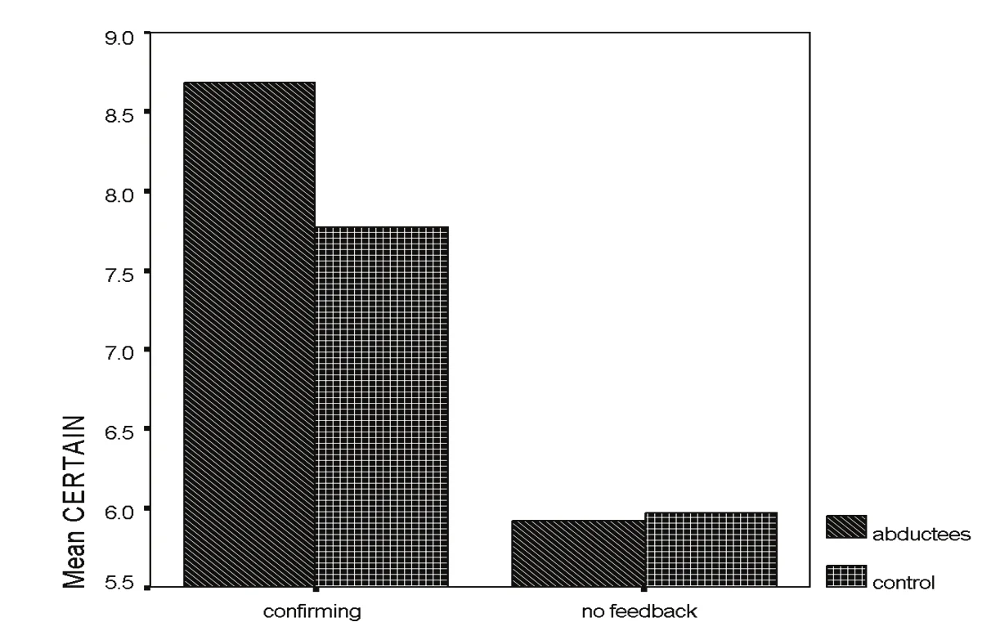

Une expérience en ligne a été menée pour tester si la distorsion de la mémoire à propos d'un jugement
social est amplifiée chez les expérienceurs d'enlèvement
par des extraterrestres (AAE) par rapport à des participants
non expérienceurs (de contrôle). Des AAE (N = 156) et des participants de contrôle (N = 171) ont lu la
transcription d'une séance de thérapie de couple fictive. Les participants apprenaient ensuite que l'un des membres du
couple avait eu une liaison peu après la séance. Ils indiquaient quelle personne, selon eux, avait eu cette liaison. La
moitié des participants était assignée au hasard à apprendre que leur décision était correcte (c'est-à-dire un retour
confirmatoire, Vous avez raison. C'est bien la personne qui a eu la liaison.
). L'autre moitié n'apprenait rien
sur l'exactitude de sa décision. Conformément aux recherches antérieures, le retour confirmatoire a gonflé les
jugements rétrospectifs liés à la décision. Comme prévu, cet effet était encore plus fort chez les expérienceurs. Ces
résultats suggèrent qu'une sensibilité accrue à la distorsion de la mémoire induite par le retour d'information
pourrait être l'un des mécanismes par lesquels les expérienceurs acquièrent de la confiance dans leurs souvenirs de
rencontres avec des extraterrestres.
Les récits modernes d'interactions avec des extraterrestres font l'objet d'intérêt depuis que Betty et Barney Hill ont rapporté avoir été enlevés en (comme rapporté dans Fuller, J. G.: The interrupted journey: Two landmark investigations of UFO encounters together in one volume, New York, MJF Books, ). Les estimations de la prévalence de ce phénomène varient considérablement. Leurs estimations du nombre de personnes qui auraient été contactées par des extraterrestres vont de 2 % Hopkins, B., Jacobs, D. & Westrum, R.: Unusual personal experiences: An analysis of the data from three national surveys conducted by the Roper organization, Las Vegas, Bigelow Holding Corp., à 5-6 % de la population des États-Unis Jacobs, D.: Secret life: First-hand accounts of UFO abductions, New York, Simon and Schuster, . Beaucoup d'autres chercheurs ne croient pas que des gens soient réellement kidnappés par des êtres extraterrestres. Ils pensent plutôt que les souvenirs d'un tel événement sont des distorsions de la réalité, et se sont attachés à trouver des explications à l'origine de ces récits faux. Toutes les explications suivantes ont été proposées pour les souvenirs d'interactions avec des extraterrestres : canulars intentionnels Klass, P. J.: UFO Abductions: A dangerous game, Buffalo (New York), Prometheus Books, , troubles du sommeil (c'est-à-dire hallucinations hypnagogiques ou hypnopompiques, voir Blackmore, S.: “Abduction by aliens or sleep paralysis?”, Skeptical Inquirer, 22, pp. 23-28, Hufford, D.: “Awakening paralyzed in the presence of a strange ‘visitor’”, in A. Pritchard, D. E. Pritchard, J. E. Mack, P. Kasey, C. Yatt (éds.): Alien Discussions: Proceedings of the Abduction Study Conference, pp. 348-353, ), expression de souvenirs refoulés d'abus sexuels Ring, K. & Rosing, C.: “The Omega project: A psychological survey of persons reporting abductions and other encounters”, Journal of UFO Studies, 2, pp. 59-98, Rodeghier, M., Goodpaster, J. & Blatterbauer, S.: “Psychosocial characteristics of experiencers: Results from the CUFOS abduction project”, Journal of UFO Studies, 3, pp. 59-90, Powers, S. M.: “Dissociation in alleged extraterrestrial experiencers”, Dissociation: Progress in the Dissociative Disorders, 7(1), pp. 44-50, , personnalités sujettes à l'imaginaire (par exemple Bartholomew, R. E., Basterfield, K. & Howard, G. S.: “UFO experiencers and contactees: Psychopathology or fantasy proneness?”, Professional Psychology: Research and Practice, 22, pp. 215-222, Rodeghier, M., Goodpaster, J. & Blatterbauer, S.: “Psychosocial characteristics of experiencers: Results from the CUFOS abduction project”, Journal of UFO Studies, 3, pp. 59-90, ), psychopathologie (par exemple Spanos, N. P., Cross, P. A., Dickson, K. & DuBreuil, S. C.: “Close encounters: An examination of UFO experiences”, Journal of Abnormal Psychology, 102, pp. 624-632, ), délires Banaji, M. R. & Kihlstrom, J. F.: “The ordinary nature of alien abduction memories”, Psychological Inquiry, 7, pp. 132-135, , faux souvenirs (par exemple Newman, L. S.: “Intergalactic hostages: People who report abduction by UFOS”, Journal of Social and Clinical Psychology, 16, pp. 151-177, ), et suggestions implantées pendant l'hypnose ou des entretiens structurés (par exemple Spanos, N. P., Burgess, C. A. & Burgess, M. F.: “Past-life identities, UFO abductions, and satanic ritual abuse: The social construction of memories”, International Journal of Clinical and Experimental Hypnosis, 42, pp. 433-446, ).
Contrairement aux chercheurs cités ci-dessus, nous ne nous sommes pas intéressées à l'origine des récits des AAE,
mais à la nature graduelle de la distorsion de la mémoire chez les expérienceurs.Bien que
certaines recherches distinguent les « expérienceurs » des « contactés » ou des
« visités », nous employons « expérienceurs » pour désigner toute personne qui rapporte avoir interagi avec des êtres
extraterrestres (pour une discussion de ces termes, voir Rodeghier, M., Goodpaster, J. & Blatterbauer, S.: “Psychosocial characteristics of experiencers: Results from the CUFOS abduction project”, Journal of UFO Studies, 3, pp. 59-90, Gotlib, D., Appelle, S., Rodeghier, M. & Flamburis, G.: “Ethics code for investigation and treatment of the abduction experience”, Journal of UFO Studies, 5, pp. 55-82, Kelley, S. M.: “A report on the demographic and common characteristics of alien experiencers”, Journal of UFO Studies, 9, pp. 1-21, ). Nous nous
intéressions en effet à la manière dont les expérienceurs passent d'un soupçon d'avoir été contactés par des
extraterrestres à la décision assurée qu'un tel événement s'est produit. La question est pertinente car les récits
des AAE indiquent que les soupçons de contact avec des extraterrestres précèdent souvent les souvenirs effectifs d'un
tel événement Kelley, S. M.: The myth of communion: A rhetorical analysis of the narratives of alien experiencers, thèse de doctorat non publiée, université du Kansas, . Imaginons comment cela pourrait se produire : une personne se réveille après avoir connu
une paralysie du sommeil. Elle décide provisoirement que la sensation de paralysie est compatible avec une visite
d'extraterrestres (par exemple Appelle, S.: “The abduction experience: A critical evaluation of theory and evidence”, Journal of UFO Studies, 6, pp. 29-78, ). Cette décision provisoire pourrait être prise après avoir consulté un
hypnotiseur ou un thérapeute qui croit à la réalité des visites extraterrestres (par exemple Bullard, T. E.: “Hypnosis and UFO abductions: A troubled relationship”, Journal of UFO Studies, 1, pp. 3-40, ). Ou bien
après avoir consulté des livres décrivant des enlèvements
(par exemple Missing Time de Budd Hopkins () Hopkins, B.: Missing time: A documented study of UFO abductions, New York, Richard Marek Publishers, ou Communion: A True Story de Whitley
Strieber () Strieber, W.: Communion: A True Story, New York, Morrow/Beech Tree Books, ). Par exemple, un expérienceur écrit
Budd Hopkins et Whitley Strieber m'ont aidé à accepter l'inacceptable… J'ai lu tous les documents sur les
ovnis et les extraterrestres en faisant des recherches sur mes propres expériences personnelles.
Kelley, S. M.: correspondance personnelle, . Les expérienceurs cherchent aussi sur Internet
des listes d'indicateurs d'enlèvement, des récits d'autres personnes ayant vécu des événements anomaux, ou des groupes
de soutien où ils peuvent parler avec d'autres expérienceurs pour tenter de comprendre leurs souvenirs incertains de
contact avec des extraterrestres Kelley, S. M.: The myth of communion: A rhetorical analysis of the narratives of alien experiencers, thèse de doctorat non publiée, université du Kansas, .
La présente recherche teste comment les expérienceurs pourraient passer d'une décision provisoire d'avoir été contactés par des extraterrestres à un souvenir assuré d'un tel événement. Plus précisément, l'hypothèse est que les expérienceurs sont très vulnérables à la distorsion de la mémoire qui résulte d'une information confirmant une décision (c'est-à-dire un retour d'information). Il est probable que les expérienceurs reçoivent un retour sur l'exactitude de leur décision provisoire d'avoir été contactés par des extraterrestres. Plusieurs expérienceurs rapportent que lorsqu'ils se sont adressés à un thérapeute favorable à la thèse des enlèvements, on leur a remis plusieurs brochures décrivant les nombreux indicateurs d'enlèvement Kelley-Romano, S.: correspondance personnelle. De même, les groupes de soutien sont susceptibles de confirmer le soupçon d'un expérienceur concernant une visite extraterrestre. La question que nous testons dans cette expérience est de savoir comment cette confirmation pourrait affecter les jugements des expérienceurs entourant la décision qu'une visite extraterrestre a bien eu lieu. Dans la présente recherche, l'hypothèse selon laquelle les expérienceurs sont particulièrement vulnérables à la distorsion de la mémoire induite par le retour d'information a été testée dans un paradigme de jugement social. Nous avons choisi un paradigme de jugement social plutôt qu'un paradigme lié à des expériences avec des êtres extraterrestres afin d'éviter que les expérienceurs ne deviennent méfiants quant à la nature de l'expérience.
Le paradigme de jugement social utilisé dans la présente recherche a déjà servi à démontrer la distorsion de la mémoire dans des recherches antérieures. Bradfield et Wells () Bradfield, A. & Wells, G. L.: “Not the same old hindsight bias: Outcome information distorts a broad range of retrospective judgments”, Memory and Cognition, 33(1), pp. 120-130, demandaient aux participants de décider lequel des membres d'un couple avait eu une liaison. Les participants étaient assignés au hasard à apprendre que leur décision était correcte ou à ne rien apprendre sur l'exactitude de leur décision. Les participants formulaient ensuite toute une série de jugements liés à leur décision. Par exemple, ils indiquaient dans quelle mesure ils se souvenaient avoir été certains de l'exactitude de leur décision au moment où elle avait été prise (c'est-à-dire la certitude rétrospective). Comme les participants étaient assignés au hasard au retour d'information, il était possible d'estimer comment ceux de la condition de retour confirmatoire auraient dû répondre si le retour n'avait eu aucune influence : ils auraient dû produire des réponses semblables à celles des participants de la condition sans retour. Notons que ce test de distorsion de la mémoire utilise un plan inter-sujets au lieu d'un plan intra-sujets (dans lequel la distorsion est démontrée en comparant les jugements des participants à deux moments ; les différences de jugement sont interprétées comme une distorsion). Dans ce test inter-sujets de distorsion de la mémoire, les personnes qui avaient appris que leur décision était correcte (c'est-à-dire un retour confirmatoire) ont déclaré se souvenir d'une plus grande certitude dans leur décision au moment où elle avait été prise, par rapport à un groupe qui n'avait reçu aucune information sur l'exactitude de sa décision.Ce paradigme est étroitement lié aux recherches de Fischhoff sur le biais rétrospectif (par exemple Fischhoff, B.: “Hindsight ≠ foresight”, Journal of Experimental Psychology: Human Perception and Performance, 1, pp. 288-299, ). Voir Bradfield et Wells () Bradfield, A. & Wells, G. L.: “Not the same old hindsight bias: Outcome information distorts a broad range of retrospective judgments”, Memory and Cognition, 33(1), pp. 120-130, pour une discussion détaillée de ces deux phénomènes. Les réponses à toute une série d'autres jugements liés aux décisions et aux aptitudes générales des participants étaient gonflées de la même manière. Nous avons fait l'hypothèse que les expérienceurs présenteraient une distorsion de la mémoire semblable dans le paradigme de jugement social, mais nous pensions que leur distorsion serait plus grande que celle d'un échantillon d'étudiants (c'est-à-dire les participants de contrôle).
L'expérience rapportée ici s'appuie sur d'autres recherches publiées qui ont examiné la mémoire dans un échantillon d'expérienceurs. Par exemple, McNally, Lasko, Clancy, Macklin, Pitman et Orr () McNally, R. J., Lasko, N. B., Clancy, S. A., Macklin, M. L., Pitman, R. K. & Orr, S. P.: “Psychophysiological responding during script-driven imagery in people reporting abduction by space aliens”, Psychological Science, 15(7), pp. 493-497, ont examiné les réponses psychophysiologiques de personnes rapportant un contact avec des êtres extraterrestres. Leurs données indiquent que les expérienceurs qui écoutaient un script contenant des détails de leur propre expérience avec des extraterrestres manifestaient une réactivité physiologique plus forte que les participants de contrôle. Plus proches de la présente recherche, Clancy, McNally, Schacter, Lenzenweger et Pitman () Clancy, S. A., McNally, R. J., Schacter, D. L., Lenzenweger, M. F. & Pitman, R. K.: “Memory distortion in people reporting abduction by aliens”, Journal of Abnormal Psychology, 111, pp. 455-461, ont utilisé un paradigme courant de mémorisation de listes de mots Roediger, H. L. & McDermott, K. B.: “Creating false memories? Remembering words not presented in lists”, Journal of Experimental Psychology: Learning, Memory, and Cognition, 21, pp. 803-814, pour démontrer une augmentation des faux rappels et des fausses reconnaissances chez les expérienceurs, par rapport aux participants de contrôle. La présente recherche complète celle de Clancy et al. en testant la mémoire d'un jugement social plutôt que celle d'un ensemble de mots préalablement étudiés. Changer le contexte dans lequel la mémoire est étudiée est important car certaines recherches suggèrent que la capacité des gens à se souvenir de mots de listes n'a pas de rapport avec leur capacité à produire des souvenirs autobiographiques exempts d'erreurs (par exemple Wilkinson, C. & Hyman, I. E.: “Individual differences related to two types of memory errors: Word lists may not generalize to autobiographical memory”, Applied Cognitive Psychology, 12(7), pp. S29-S46, ). En outre, la présente recherche prolonge celle de Clancy et al. en employant un échantillon d'expérienceurs nettement plus grand que celui utilisé précédemment. Chez Clancy et al., il y avait 11 personnes ayant des souvenirs d'enlèvement par des extraterrestres (groupe « récupéré ») et 9 personnes qui soupçonnaient avoir été enlevées mais n'en avaient aucun souvenir (groupe « refoulé »), alors que la présente recherche inclut les données de 156 personnes qui croient avoir eu un contact avec des êtres extraterrestres.
Pour tester l'hypothèse exposée ci-dessus, les participants lisaient une courte transcription d'une séance de thérapie de couple, puis jugeaient lequel des membres du couple avait eu une liaison. Les participants étaient ensuite assignés au hasard à apprendre que leur décision était correcte (retour confirmatoire) ou à ne rien apprendre sur leur décision (pas de retour). Nous prédisions que les personnes ayant reçu un retour déformeraient leurs souvenirs de la confiance qu'elles avaient au moment de leur décision (ainsi que d'autres souvenirs), mais que la distorsion serait plus grande chez les expérienceurs que chez les participants de contrôle.
Les participants de contrôle (N = 171) ont été recrutés dans plusieurs grandes universités du pays. Ils ont soit reçu des points de bonus en échange de leur participation, soit été invités, en cours, à participer pour comprendre comment la recherche est menée en ligne. Les expérienceurs (N = 156) ont été recrutés de l'une de deux manières. D'abord, un courriel demandant des volontaires a été envoyé à une base de données existante d'expérienceurs gérée par la première autrice. Cette base contient les réponses à des questionnaires de personnes qui affirment avoir été contactées par des extraterrestres. Les participants avaient initialement été recrutés en ligne pour remplir ces questionnaires via des liens sur d'autres sites liés aux enlèvements actifs au moment de la collecte des données (par exemple www.caus.org) et lors de conférences sur les ovnis (par exemple la Rocky Mountain UFO Conference annuelle). Pour s'assurer de la cohérence des récits, les participants ont répondu à des questions de suivi, par écrit ou en entretien, afin de confirmer les détails de leur récit et leurs données démographiques. Seuls les cas dans lesquels les participants ont fait preuve de cohérence dans leurs récits et leurs détails personnels ont été inclus dans le présent jeu de données.
Une fois qu'elles avaient accepté de participer, les personnes étaient dirigées vers une page web présentant l'expérience. Cette introduction décrivait l'expérience comme un examen des jugements portés sur les relations interpersonnelles. Les participants apprenaient qu'ils allaient lire des extraits de la transcription d'une conversation d'un couple lors d'une séance de thérapie, accompagnés de plusieurs photos du couple. Une fois la transcription lue, ils répondraient à quelques questions sur ce qu'ils avaient lu. Les participants cliquaient ensuite sur un lien pour accéder au formulaire de consentement. Après l'avoir lu, ils cochaient une case en bas de la page indiquant leur accord pour participer. À tout moment, les participants pouvaient cesser leur participation en fermant la page web. Rien n'indique qu'un participant ait interrompu l'expérience prématurément, car il n'y avait aucun enregistrement de données incomplet. Après avoir accepté de participer, les participants voyaient cinq pages d'extraits d'une séance de thérapie fictive. Sur chaque page figurait une photographie d'un homme et d'une femme dans un bureau. On s'est efforcé d'accorder l'attitude du couple au texte de la transcription. Par exemple, la photo accompagnant la partie de la transcription dans laquelle la femme se plaint que son partenaire ne sort jamais les poubelles montrait la femme l'air en colère.
Après avoir lu la transcription, les participants lisaient que l'un des membres du couple avait eu une liaison peu
après l'enregistrement de la transcription. Les participants indiquaient quelle personne avait eu la liaison. À ce
stade, les participants étaient assignés au hasard à recevoir un retour confirmatoire ou aucun retour sur
l'exactitude de leur décision. Dans la condition de retour confirmatoire, les participants voyaient un écran
affichant les mots Vous avez raison. C'est bien la personne qui a eu la liaison. Bien, nous aimerions maintenant
vous poser quelques questions sur ce que vous avez lu.
La transcription avait été conçue pour que le retour
confirmatoire soit plausible quelle que soit la décision prise par les participants. Dans la condition sans retour,
les participants voyaient Bien, nous aimerions maintenant vous poser quelques questions sur ce que vous avez
lu.
Après avoir pris leur décision, tous les participants remplissaient un questionnaire de 13 items portant sur des jugements liés à leur décision : leur degré de certitude au moment où ils avaient pris leur décision (c'est-à-dire la certitude rétrospective), l'attention qu'ils avaient prêtée à la conversation, s'ils étaient doués pour juger les comportements non verbaux, etc.L'instrument d'enquête complet peut être obtenu auprès des autrices. Les données d'un participant ont été retirées parce qu'on craignait qu'il n'ait pas pris l'expérience au sérieux : chacune des notes saisies était la valeur par défaut. Ce profil de réponses ne s'est rencontré chez aucun autre participant. Des informations démographiques telles que l'âge, l'État de résidence et le statut d'étudiant étaient aussi recueillies. Enfin, les participants lisaient un texte de compte rendu de l'expérience et étaient remerciés de leur participation. Le plan de l'expérience était un plan factoriel inter-sujets 2 (retour confirmatoire contre absence de retour) x 2 (expérienceur contre contrôle).
Un problème courant de la collecte de données sur le web est que les gens peuvent répondre plus d'une fois au matériel de recherche (par exemple Bai, H.: Evidence that a large amount of low quality responses on MTurk can be detected with repeated GPS coordinates, site Sights + Sounds, , consulté le ). Nous avons traité ce problème en structurant la page web de l'expérience de sorte que les adresses de fournisseur internet (IP) des participants soient automatiquement enregistrées à chaque envoi de données. Avant toute analyse, nous avons recherché dans le jeu de données les adresses IP en double. Les données de 50 participants étaient associées à des adresses IP en double et ont été retirées du jeu de données.Il est possible que ces adresses IP en double correspondent à des participants distincts, car certains fournisseurs d'accès attribuent la même adresse IP à plusieurs clients. Cependant, comme nous ne pouvions pas vérifier si c'était le cas dans notre jeu de données, nous avons retiré les participants dont l'adresse IP en dupliquait une autre. Les analyses menées sur le jeu de données complet donnent des résultats semblables à ceux rapportés ici. Parmi les expérienceurs, les données de 27 participants provenant de neuf adresses IP ont été retirées. Parmi les participants de contrôle, les données de 23 participants provenant de 10 adresses IP ont été retirées. Les analyses rapportées ci-dessous ont été menées sur le jeu de données restant de 327 participants : 156 expérienceurs et 171 participants de contrôle.
Les participants ont indiqué leur âge, leur genre, et s'ils étaient inscrits dans un établissement d'enseignement. Comme les participants de contrôle avaient été recrutés dans des établissements d'enseignement supérieur, on s'attendait à ce que ce groupe soit plus jeune et plus souvent en cours d'études que les expérienceurs. De fait, un test t pour deux échantillons indépendants a révélé que les expérienceurs étaient significativement plus âgés (M = 47,94, SD = 12,67) que les participants de contrôle (M = 20,91, SD = 5,47), t(325) = 25,43, p < 0,001. En outre, un test z d'égalité de deux proportions a indiqué que les participants de contrôle étaient significativement plus nombreux à se déclarer en cours d'études (85,26 %) que les expérienceurs (1,16 %), z = 15,46, p < 0,001. Un autre test z a indiqué qu'il y avait significativement plus de femmes dans l'échantillon de contrôle (78,36 %) que dans celui des expérienceurs (57,05 %), z = 4,14, p < 0,001.
Une analyse de variance multivariée (MANOVA) à deux facteurs a été menée avec le type de participant et le retour comme variables indépendantes. La MANOVA incluait l'âge, le genre et l'inscription dans un établissement d'enseignement comme covariables, en raison des différences significatives entre les échantillons rapportées ci-dessus. Cette MANOVA a indiqué que l'âge et l'inscription n'étaient pas des covariables significatives, Fs(12, 309) < 1,21, ps > 0,27. Les analyses suivantes ont donc été menées avec le seul genre comme covariable. La MANOVA suivante a révélé des effets principaux globaux significatifs de la covariable (genre), du retour et du type de participant, Fs(12, 311) > 2,52, ps < 0,004. Il y avait en outre une interaction globale significative retour x type de participant, F(12, 311) = 1,99, p < 0,03.
L'examen de la MANOVA a révélé qu'une seule mesure dépendante contribuait à la significativité de la covariable : les participantes ont déclaré avoir prêté significativement plus d'attention à la transcription (M = 8,19, SD = 1,77) que les participants masculins (M = 7,50, SD = 2,03), F(1, 322) = 18,00, p < 0,001, d = 0,37. L'effet principal du retour était beaucoup plus large : neuf mesures dépendantes ont révélé des différences significatives. Par rapport aux personnes n'ayant reçu aucun retour, celles qui avaient reçu un retour confirmatoire ont déclaré se souvenir d'une plus grande certitude au moment de leur décision, avoir prêté plus d'attention à la transcription, avoir eu une meilleure base pour leur décision, avoir pris leur décision plus facilement et plus rapidement, être meilleures pour juger autrui, ont prédit que leur décision aurait été plus exacte si elles avaient vu une vidéo au lieu d'une transcription, et ont déclaré être plus intéressées par le fait de juger autrui et y prendre plus de plaisir, Fs(1, 322) > 4,83, ps < 0,03, ds > 0,26 (voir le tableau 1 ci-dessous pour les moyennes et écarts-types).
| Mesure dépendante | Participants de contrôle | Expérienceurs | Effet principal du retour | Effet principal du type de participant | Interaction retour x type de participant | ||
|---|---|---|---|---|---|---|---|
| Pas de retour | Retour confirmatoire | Pas de retour | Retour confirmatoire | F | F | F | |
| Certitude | 5,98 (1,83) | 7,78 (1,39) | 5,92 (2,71) | 8,69 (1,44) | 110,46*** | 2,99† | 5,01* |
| Attention | 7,28 (1,72) | 8,12 (1,79) | 8,15 (1,86) | 8,43 (2,02) | 9,69** | 15,01*** | 1,89 |
| Fondement | 5,26 (2,08) | 6,94 (2,10) | 5,47 (2,82) | 7,73 (2,52) | 54,33*** | 3,05† | 1,17 |
| Facile | 5,50 (2,42) | 3,88 (2,28) | 5,62 (2,97) | 3,37 (2,53) | 45,93*** | 0,58 | 1,21 |
| Long | 3,65 (1,79) | 2,74 (1,82) | 3,92 (2,71) | 1,87 (1,27) | 44,82*** | 2,10 | 6,61** |
| Jugements | 6,71 (1,88) | 7,36 (1,90) | 6,64 (2,53) | 7,80 (1,79) | 15,44*** | 0,47 | 1,21 |
| Non verbal | 7,09 (1,69) | 7,48 (1,80) | 7,74 (2,09) | 8,11 (1,73) | 3,51† | 9,74** | 0,00 |
| Conflictuel | 7,45 (1,59) | 7,27 (1,65) | 6,90 (2,24) | 6,60 (2,15) | 1,47 | 9,59** | 0,08 |
| Vidéo | 7,58 (1,71) | 7,72 (1,89) | 7,15 (2,18) | 8,13 (2,04) | 6,47** | 0,00 | 3,73* |
| Intéressant | 7,45 (2,24) | 7,72 (2,33) | 5,36 (3,13) | 6,74 (3,21) | 7,69** | 21,87*** | 3,41† |
| Agréable | 5,63 (2,55) | 6,05 (2,44) | 3,71 (2,87) | 4,61 (2,93) | 4,83* | 29,81*** | 0,66 |
| Futur | 7,58 (2,22) | 7,31 (2,42) | 5,67 (2,96) | 6,96 (2,93) | 3,41† | 11,31*** | 7,18** |
| Note. p < 0,10 est noté †, p < 0,05 est noté *, p < 0,01 est noté **, p < 0,001 est noté *** | |||||||
Il y avait aussi plusieurs effets significatifs du type de participant. Par rapport aux participants de contrôle, les expérienceurs ont indiqué avoir prêté plus d'attention à la transcription, se sont déclarés meilleurs pour interpréter les comportements non verbaux, ont trouvé la conversation du couple moins conflictuelle, se sont montrés moins intéressés par le fait de juger autrui, y ont pris moins de plaisir, et étaient moins disposés à participer à des recherches semblables à l'avenir, Fs(1, 322) > 9,74, ps < 0,002, ds > 0,33.[Note de RR0] Dans le tableau 1, l'effet du type de participant sur l'item « Conflictuel » est F = 9,59, légèrement inférieur à la borne de 9,74 donnée ici.
La question principale de cette expérience était de savoir si les expérienceurs présenteraient une distorsion de la mémoire plus importante que les participants de contrôle. L'hypothèse d'une plus grande sensibilité des expérienceurs à la distorsion de la mémoire a été confirmée par des interactions univariées significatives sur les déclarations concernant le degré de certitude dont les participants se souvenaient au moment de leur décision, F(1, 322) = 5,01, p = 0,03, et le temps qu'avait pris leur décision, F(1, 322) = 6,61, p = 0,01. Il y avait aussi des interactions significatives sur les déclarations des participants quant à savoir si voir une vidéo aurait modifié l'exactitude de leur décision, F(1, 322) = 3,73, p = 0,05, et s'ils seraient disposés à participer à des recherches semblables à l'avenir, F(1, 322) = 7,18, p = 0,008. Enfin, il y avait une interaction marginalement significative sur les déclarations des participants quant à l'intérêt de juger autrui, F(1, 322) = 3,41, p = 0,06.
Toutes les interactions ont montré que l'effet du retour confirmatoire était plus prononcé chez les expérienceurs que chez les participants de contrôle. Considérons par exemple l'interaction sur le degré de certitude dont les participants se souvenaient au moment de leur décision. Les effets simples du type de participant ont révélé qu'en l'absence de retour, les réponses des expérienceurs (M = 5,92, SD = 2,71) et des participants de contrôle (M = 5,98, SD = 1,83) étaient équivalentes, t(170) = 0,17, p = 0,87, d = 0,03. Ce résultat indique qu'en l'absence de retour sur leur décision, les deux groupes de participants avaient des souvenirs semblables de leur certitude quant à la décision prise. En revanche, une fois le retour confirmatoire introduit, ces deux groupes ne produisaient plus des réponses équivalentes : les réponses des expérienceurs étaient gonflées par rapport à celles des participants de contrôle. Les expérienceurs ont déclaré se souvenir d'avoir été plus confiants dans l'exactitude de leur décision au moment où elle avait été prise (M = 8,69, SD = 1,44) que les participants de contrôle (M = 7,78, SD = 1,39), t(153) = 3,98, p < 0,001, d = 0,61 (voir figure 1).

Une interaction significative retour x type de participant est aussi apparue sur les déclarations des participants concernant le temps qu'avait pris leur décision ; le profil de cette interaction était identique à celui décrit ci-dessus pour la certitude rétrospective. En l'absence de retour, les réponses des expérienceurs (M = 3,92, SD = 2,71) et des participants de contrôle (M = 3,65, SD = 1,79) étaient équivalentes, t(170) = 0,77, p = 0,45, d = 0,11. Là encore, les réponses des deux groupes n'étaient pas équivalentes dans la condition de retour confirmatoire. Après avoir reçu un retour confirmatoire, les expérienceurs ont déclaré que leur décision avait pris significativement moins de temps (M = 1,87, SD = 1,27) que les participants de contrôle (M = 2,74, SD = 1,82), t(153) = 3,38, p < 0,001, d = 0,53.
Les deux autres interactions significatives retour x type de participant, sur la manière dont les réponses auraient différé si une vidéo avait été montrée et sur le souhait des participants de participer à de futures recherches, ont aussi montré que l'effet du retour était plus grand chez les expérienceurs que chez les participants de contrôle. Pour ces mesures dépendantes, cet effet se voit le plus clairement en examinant les effets simples du retour selon le type de participant. Par exemple, chez les participants de contrôle, le retour n'avait aucun effet sur les déclarations quant à savoir si voir une vidéo de la conversation du couple aurait modifié l'exactitude, ni sur la disposition à participer à de futures recherches, ts(169) < 0,78, ps > 0,44, ds < 0,11. En revanche, chez les expérienceurs, ceux qui avaient reçu un retour confirmatoire ont déclaré que leur décision aurait été plus exacte s'ils avaient vu une vidéo, et se sont montrés plus intéressés à participer à des recherches semblables à l'avenir, ts(154) > 2,70, ps < 0,008, ds > 0,43.
Les participants ont aussi choisi l'une de deux descriptions de leur processus de décision. Dans l'ensemble, les
participants ont significativement plus souvent choisi l'option J'ai dû repenser à la conversation et la
reconstituer avant de pouvoir décider quelle personne avait eu une liaison
(61,20 %) que l'option Dès que
j'ai lu que l'une des personnes avait eu une liaison, j'ai su exactement de qui il s'agissait
(38,80 %),
χ2(1, N = 327) = 16,30, p < 0,001. Pour déterminer si la répartition des réponses à cette question différait entre
expérienceurs et participants de contrôle, un test du khi carré d'homogénéité a été mené (voir le tableau 2 pour
les effectifs).
| Dès que j'ai lu que l'une des personnes avait eu une liaison, j'ai su exactement de qui il s'agissait. | J'ai dû repenser à la conversation et la reconstituer avant de pouvoir décider quelle personne avait eu une liaison. | Total | |
|---|---|---|---|
| Expérienceurs | 78 | 105 | 183 |
| Participants de contrôle | 64 | 130 | 194 |
| Total | 142 | 235 | 377 |
Ce test a révélé un effet marginalement significatif, χ2(1, N = 327) = 3,65, p = 0,056.[Note de RR0] Les effectifs du tableau 2 totalisent 377 participants (183 expérienceurs et 194 contrôles), et non les 327 du jeu de données analysé : les écarts (27 expérienceurs et 23 contrôles) correspondent exactement aux 50 participants retirés pour adresses IP en double, si bien que le tableau semble compter le jeu de données complet. Les statistiques données dans le texte correspondent au contraire au jeu de données analysé : 69 expérienceurs sur 156 (44,23 %) et 58 contrôles sur 171 (33,92 %) choisissant la première option, soit 127 (38,8 %) contre 200 (61,2 %) au total, donnent bien χ2 = 16,30 et χ2 = 3,65, alors que les effectifs du tableau donneraient 37,7 % contre 62,3 %, χ2 = 22,94 et χ2 = 3,72. Pour déterminer si cet effet concordait avec les résultats indiquant que le retour affectait davantage les expérienceurs que les participants de contrôle, un test z unilatéral d'égalité des proportions a été mené. Ce test comparait la fréquence des participants de contrôle et des expérienceurs ayant choisi l'option indiquant qu'ils avaient su quelle personne avait eu la liaison immédiatement après qu'on le leur avait dit ; il a révélé qu'un pourcentage significativement plus élevé d'expérienceurs (44,23 %) avait choisi cette option, par rapport aux participants de contrôle (33,91 %), z = 1,92, p < 0,05, unilatéral.
Des personnes ayant rapporté un contact avec des êtres extraterrestres (expérienceurs) et des étudiants (contrôles) ont lu la transcription d'une séance de thérapie de couple fictive, puis décidé lequel des membres du couple avait eu une liaison. Après leur décision, les participants étaient assignés au hasard à apprendre que leur décision était correcte (retour confirmatoire) ou à ne rien apprendre sur son exactitude (pas de retour). Comme prévu, les expérienceurs comme les participants de contrôle qui avaient appris que leur décision était correcte ont déformé leurs jugements rétrospectifs. Les personnes ayant reçu un retour confirmatoire ont gonflé leurs déclarations sur l'événement (par exemple, elles ont déclaré avoir prêté plus d'attention à la transcription), sur la décision (par exemple, elles ont déclaré que la décision avait été plus facile et plus rapide) et sur leurs préférences générales (par exemple, elles ont déclaré prendre moins de plaisir à juger autrui, en général).
Comme les participants étaient assignés au hasard au retour et que le questionnaire portait sur des événements (ou
des opinions) survenus (ou existant) avant l'administration du retour, les réponses des participants à ces questions
n'auraient pas dû différer entre les deux groupes. Par exemple, du fait de l'assignation aléatoire, les participants
des conditions avec retour confirmatoire et sans retour auraient dû déclarer des niveaux équivalents de certitude
rétrospective. Or les participants ayant reçu un retour confirmatoire ont clairement fait preuve d'une distorsion de
la mémoire en se souvenant avoir été plus confiants au moment de leur décision que les personnes n'ayant reçu aucun
retour. Une explication de cet effet est que les gens ne considèrent pas les jugements représentés dans le
questionnaire avant qu'on les interroge à leur sujet. À ce moment-là, ils ne peuvent pas répondre aux questions sans
tenir compte de ce qu'ils savent de l'exactitude de leur décision (c'est-à-dire le retour). On comprend donc aisément
pourquoi les réponses à des questions telles que Quel était votre degré de certitude au moment de votre
décision ?
sont déformées par le retour (par exemple Steblay, N., Wells, G. L. & Douglass, A. B.: “The eyewitness post-identification feedback effect 15 years later: Theoretical and policy implications”, Psychology, Public Policy, and Law, 20, pp. 1-18, ).
Le but principal de cette expérience était de tester l'hypothèse selon laquelle la distorsion de la mémoire dans ce paradigme de jugement social serait plus grande chez les expérienceurs que chez les participants de contrôle. Les jugements de certitude rétrospective offrent un exemple clair de la confirmation de cette hypothèse. Dans la condition sans retour, expérienceurs et participants de contrôle ont déclaré des niveaux équivalents de certitude rétrospective. Dans la condition de retour confirmatoire, bien que les deux groupes aient produit des jugements gonflés, l'inflation observée dans l'échantillon d'expérienceurs était significativement plus grande que dans l'échantillon de contrôle. L'interaction entre le retour et le type de participant appuie la possibilité que la sensibilité au retour confirmatoire soit l'une des explications de la façon dont un soupçon provisoire de visite extraterrestre devient, chez les expérienceurs, un souvenir assuré d'un tel événement. Comme on l'a montré ici, les décisions initiales des expérienceurs et des participants de contrôle étaient provisoires : les notes de certitude se situaient au milieu de l'échelle pour tous les participants du groupe sans retour. En revanche, une fois le retour confirmatoire administré, les expérienceurs se sont souvenus d'avoir été beaucoup plus confiants dans l'exactitude de leur décision que les participants de contrôle.
Les effets observés sur les déclarations de certitude rétrospective posent problème car la certitude est
directement liée aux croyances sur l'exactitude de nos propres souvenirs (par
exemple Hyman, I. E. & Billings, F. J.: “Individual differences and the creation of false childhood memories”, Memory, 6(1), pp. 1-20, ). La malléabilité des déclarations de certitude rétrospective des expérienceurs pourrait donc
compromettre leur capacité à juger de l'exactitude de leurs propres souvenirs. Cela pourrait avoir de larges effets
sur la santé mentale car, comme le suggèrent certains chercheurs, croire en l'exactitude de… ses propres
souvenirs est probablement crucial pour le bien-être mental
Ross, M. & Newby, I. R.: “Distinguishing memory from fantasy”, Psychological Inquiry, 7, pp. 173-177, , p. 173. Les déclarations de certitude sont aussi
indispensables pour juger de l'exactitude des souvenirs d'autrui dans des contextes aussi variés que les souvenirs
retrouvés d'abus sexuels dans l'enfance (par exemple Garry, M. & Polaschek, D. L. L.: “Imagination and memory”, Current Directions in Psychological Science, 9(1), pp. 6-10, Porter, S., Yuille, J. C. & Lehman, D. R.: “The nature of real, implanted, and fabricated memories for emotional childhood events: Implications for the recovered memory debate”, Law and Human Behavior, 23(5), pp. 517-537, ), les souvenirs flash (par exemple
Talarico, J. M. & Rubin, D. C.: “Confidence, not consistency, characterizes flashbulb memories”, Psychological Science, 14, pp. 455-461, ) et les identifications par des témoins oculaires (par exemple
Douglass, A. B. & Jones, E.: “Confidence inflation in eyewitnesses: Seeing is not believing”, Legal and Criminological Psychology, 18, pp. 152-167, ).
Les déclarations de certitude gonflées sont le plus saillant d'un ensemble de jugements utilisés pour évaluer l'exactitude des souvenirs d'autrui. Deux autres jugements utilisés pour évaluer l'exactitude ont été plus gonflés chez les expérienceurs que chez les participants de contrôle : les déclarations sur le temps qu'avait pris la décision et l'adhésion à une décision présentée comme automatique (plutôt que comme le résultat d'une délibération). Les observateurs utilisent souvent la rapidité d'une décision comme indice de son exactitude, si bien que les effets observés ici pourraient avoir des conséquences sur la propension des gens à croire les souvenirs des expérienceurs postérieurs à un retour (par exemple Dunning, D. E. & Stern, L. B.: “Distinguishing accurate from inaccurate eyewitness identifications via inquiries about decision processes”, Journal of Personality and Social Psychology, 67(5), pp. 818-835, ).
Pourquoi les expérienceurs sont-ils plus sensibles aux effets du retour que les participants de contrôle ? Une possibilité est qu'ils aient une prédisposition à des expériences cognitives inhabituelles comme les « trous noirs » ou la perte de temps (c'est-à-dire la dissociation, par exemple Powers, S. M.: “Dissociation in alleged extraterrestrial experiencers”, Dissociation: Progress in the Dissociative Disorders, 7(1), pp. 44-50, Ring, K. & Rosing, C.: “The Omega project: A psychological survey of persons reporting abductions and other encounters”, Journal of UFO Studies, 2, pp. 59-98, ). De fait, le « temps manquant » est l'un des symptômes les plus fréquemment rapportés par les expérienceurs (par exemple Bullard, T. E.: Abductions: The measure of a mystery, Mt. Rainier (Maryland), Fund for UFO Research, Kelley, S. M.: The myth of communion: A rhetorical analysis of the narratives of alien experiencers, thèse de doctorat non publiée, université du Kansas, Kelley-Romano, S., [Note de RR0] Cette référence est absente de la liste de références du chapitre.), et chercheurs comme expérienceurs le considèrent comme un fort indicateur qu'un enlèvement a eu lieu (par exemple Hopkins, B.: Missing time: A documented study of UFO abductions, New York, Richard Marek Publishers, ). Les recherches sur des échantillons de non-expérienceurs indiquent que les personnes enclines à la dissociation sont particulièrement sensibles à la distorsion de la mémoire concernant de faux événements Hyman, I. E. & Billings, F. J.: “Individual differences and the creation of false childhood memories”, Memory, 6(1), pp. 1-20, , des questions trompeuses Eisen, M. L. & Carlson, E. B.: “Individual differences in suggestibility: Examining the influence of dissociation, absorption, and a history of childhood abuse”, Applied Cognitive Psychology, 12(7), pp. S47-S61, et des listes de mots Winograd, E., Peluso, J. P. & Glover, T. A.: “Individual differences in susceptibility to memory illusions”, Applied Cognitive Psychology, 12(7), pp. S5-S27, .
Une autre explication des résultats obtenus dans la présente recherche tient à l'intégration de l'information
nouvelle. Les recherches montrent que les gens comprennent une information nouvelle et l'acceptent comme vraie dans
le même mouvement Gilbert, D., Krull, D. & Malone, P.: “Unbelieving the unbelievable: Some problems in the rejection of false information”, Journal of Personality and Social Psychology, 59, pp. 601-613, . Une fois l'information acceptée, un effort de réflexion est nécessaire pour la rejeter.
Peut-être l'effort de réflexion nécessaire pour rejeter le soupçon provisoire d'une visite extraterrestre est-il
écourté chez les expérienceurs, surtout à une époque où d'innombrables sites sur les enlèvements et visites
extraterrestres sont disponibles en ligne. C'est une possibilité raisonnable car la croyance aux ovnis est
positivement corrélée à la désorganisation cognitive Chequers, J., Joseph, S. & Diduca, D.: “Belief in extraterrestrial life, UFO-related beliefs, and schizotypal personality”, Personality and Individual Differences, 23(3), pp. 519-521, , évaluée par des questions telles que Êtes-vous
facilement désorienté si beaucoup de choses se passent à la fois ?
Rawlings, D. & MacFarlane, C.: “A multidimensional schizotypal traits questionnaire for young adolescents”, Personality and Individual Differences, 7(4), pp. 489-496, , p. 492[Note de RR0] Cet article a paru dans le volume 17 (numéro 4) de Personality and Individual Differences, et non dans le volume 7.. De futures recherches seront
nécessaires pour établir si les déclarations de contact extraterrestre effectif sont corrélées à la désorganisation
cognitive et si celle-ci altère la capacité des gens à rejeter une information fausse. De telles études pourraient
aussi examiner si la capacité générale des expérienceurs à écarter une information est altérée (voir par exemple
Wegner et Zanakos () Wegner, D. M. & Zanakos, S.: “Chronic thought suppression”, Journal of Personality, 62(4), pp. 615-640, pour une échelle servant à mesurer la
suppression des pensées indésirables).
L'expérience la plus proche de la présente recherche, celle de Clancy et al. ()
Clancy, S. A., McNally, R. J., Schacter, D. L., Lenzenweger, M. F. & Pitman, R. K.: “Memory distortion in people reporting abduction by aliens”, Journal of Abnormal Psychology, 111, pp. 455-461, , soutient que des erreurs de contrôle de la source expliquent l'augmentation de la distorsion de la mémoire
chez les expérienceurs (voir par exemple Johnson, M. K., Hashtroudi, S. & Lindsay, D. S.: “Source monitoring”, Psychological Bulletin, 114, pp. 3-28, ). Les erreurs de contrôle de la source ne sont pas une explication
appropriée des résultats observés ici, car on n'a pas posé aux participants de questions les obligeant à identifier
la source d'un souvenir (c'est-à-dire Ce mot figurait-il ou non sur une liste étudiée auparavant ?
).
La présente recherche a réuni l'un des plus grands échantillons d'expérienceurs jamais testés dans une expérience de distorsion de la mémoire. Les recherches antérieures sur les expérienceurs n'ont porté que sur de petits échantillons (par exemple 20 chez Clancy et al. Clancy, S. A., McNally, R. J., Schacter, D. L., Lenzenweger, M. F. & Pitman, R. K.: “Memory distortion in people reporting abduction by aliens”, Journal of Abnormal Psychology, 111, pp. 455-461, ; 49 chez Spanos et al. Spanos, N. P., Cross, P. A., Dickson, K. & DuBreuil, S. C.: “Close encounters: An examination of UFO experiences”, Journal of Abnormal Psychology, 102, pp. 624-632, ) ou sur de grands échantillons dont la collecte des données s'est étalée sur de très longues périodes (par exemple 225 participants en 17 ans, Parnell et Sprinkle Parnell, J. O. & Sprinkle, R. L.: “Personality characteristics of persons who claim UFO experiences”, Journal of UFO Studies, 2, pp. 45-58, ). De plus, Parnell et Sprinkle () Parnell, J. O. & Sprinkle, R. L.: “Personality characteristics of persons who claim UFO experiences”, Journal of UFO Studies, 2, pp. 45-58, et Spanos et al. () Spanos, N. P., Cross, P. A., Dickson, K. & DuBreuil, S. C.: “Close encounters: An examination of UFO experiences”, Journal of Abnormal Psychology, 102, pp. 624-632, incluaient des personnes ayant observé des ovnis ; notre échantillon n'incluait que des personnes déclarant avoir été effectivement contactées par des êtres extraterrestres.
Le grand échantillon d'expérienceurs testé ici présentait plusieurs caractéristiques intéressantes. Par exemple,
par rapport aux participants de contrôle, les expérienceurs se sont déclarés moins disposés à participer à des
recherches semblables à l'avenir, moins intéressés par le fait de juger autrui, et y prenant moins de plaisir. Ces
résultats concordent avec les données selon lesquelles les expérienceurs sont excessivement sensibles à la
critique, et… enclins à interpréter personnellement les actions d'autrui à leur égard
Parnell, J. O. & Sprinkle, R. L.: “Personality characteristics of persons who claim UFO experiences”, Journal of UFO Studies, 2, pp. 45-58, , p. 51. Peut-être
cette tendance s'étend-elle au désintérêt pour le fait de juger autrui. En outre, s'agissant de personnes qui se
perçoivent souvent comme injustement et durement jugées par les autres, leur réticence se comprend. Il est
intéressant de noter, toutefois, que même si les expérienceurs déclarent ne pas aimer juger autrui, ils ont
néanmoins indiqué avoir prêté plus d'attention à la transcription et être meilleurs pour porter de tels jugements
que les participants de contrôle. Cette dernière affirmation concorde avec les recherches montrant qu'une vaste
majorité d'expérienceurs affirment avoir des capacités psychiques (94 %
dans une étude, Kelley-Romano, S., [Note de RR0] Cette référence est absente de la liste de références du chapitre., voir aussi Bartholomew, R. E., Basterfield, K. & Howard, G. S.: “UFO experiencers and contactees: Psychopathology or fantasy proneness?”, Professional Psychology: Research and Practice, 22, pp. 215-222, ) et se déclarent plus consciencieux que les participants de
contrôle Hough, P. & Rogers, P.: “Individuals who report being abducted by aliens: Investigating the differences in fantasy proneness, emotional intelligence and the big five personality factors”, Imagination, Cognition and Personality, 27(2), pp. 139–161, [Note de RR0] Le chapitre cite cette étude comme « Hough and Rogers, 2004 »,
mais sa liste de références, comme la revue, la datent de .. En outre,
les expérienceurs rapportent souvent qu'une conséquence de leurs interactions avec des extraterrestres est une
conscience de soi et une perception accrues Kelley-Romano, S.: correspondance personnelle.
Une limite de cette recherche tient au fait que les participants de contrôle n'ont pas été directement interrogés sur des expériences de contact avec des extraterrestres. Nous n'avons pas inclus de question sur un tel contact car cela aurait pu rendre les participants de contrôle méfiants quant à la nature de l'expérience. Cependant, la probabilité que plus d'une poignée de participants aient rapporté un contact avec des extraterrestres est faible. Bien que des données de sondage indiquent que jusqu'à 48 % du grand public croit aux ovnis, le nombre de personnes rapportant une expérience personnelle avec des extraterrestres est bien plus faible : 2 % dans un sondage Patry, A. L. & Pelletier, L. G.: “Extraterrestrial beliefs and experiences: An application of the Theory of Reasoned Action”, Journal of Social Psychology, 141, pp. 199-217, . Il semble donc raisonnable de supposer que peu de nos participants de contrôle auraient rapporté une expérience personnelle avec des extraterrestres. Une autre limite potentielle de cette expérience est la différence d'âge et d'inscription dans un établissement d'enseignement entre notre échantillon d'expérienceurs et notre échantillon de comparaison. Cependant, l'âge et l'inscription n'étaient pas des covariables significatives, ce qui indique que les différences sur ces variables n'ont pas interféré avec l'hypothèse testée.
Les recherches futures sur les expérienceurs devraient se détourner de l'étude de leur pathologie. Les recherches se sont déjà penchées sur cette question, et beaucoup ont conclu que les expérienceurs ne sont pas plus pathologiques que la population générale (par exemple Bartholomew, R. E., Basterfield, K. & Howard, G. S.: “UFO experiencers and contactees: Psychopathology or fantasy proneness?”, Professional Psychology: Research and Practice, 22, pp. 215-222, Holden, K. J. & French, C. C.: “Alien abduction experiences: Some clues from neuropsychology and neuropsychiatry”, Cognitive Neuropsychiatry, 7, pp. 163-178, Spanos, N. P., Cross, P. A., Dickson, K. & DuBreuil, S. C.: “Close encounters: An examination of UFO experiences”, Journal of Abnormal Psychology, 102, pp. 624-632, ). La présente recherche suggère une autre direction pour les futures études sur les expérienceurs, étant donné les éléments présentés ici selon lesquels la distorsion de la mémoire des expérienceurs ne se limite pas aux souvenirs d'avoir été enlevés par des extraterrestres. Les recherches devraient se concentrer sur le fonctionnement chez les expérienceurs de fonctions cognitives normales telles que la suppression chronique Wegner, D. M. & Zanakos, S.: “Chronic thought suppression”, Journal of Personality, 62(4), pp. 615-640, , la contagion sociale Meade, M. L. & Roediger, H. L.: “Explorations in the social contagion of memory”, Memory and Cognition, 30(7), pp. 995-1009, et la distorsion générale de la mémoire. Les expérienceurs sont sensibles à un large éventail de souvenirs liés à une décision de jugement social, ce qui suggère que leur vie pourrait être imprégnée de distorsions de la mémoire bien au-delà de ce qui se manifeste dans leurs récits de contact extraterrestre.
Nous remercions Jon Mellen et Rebecca White d'avoir posé pour les photographies mises en ligne, Vesna Hampel et Luke Douglass d'avoir joué le couple fictif dans le paradigme original de retour post-décisionnel, Danny Hughes d'avoir mis en place le programme informatique, et Luke Douglass et Josh Barney pour leurs relectures attentives des versions précédentes de ce manuscrit.